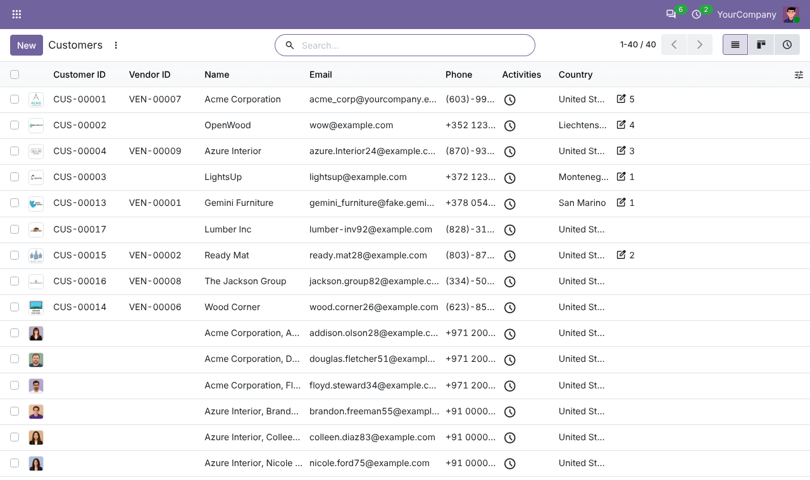
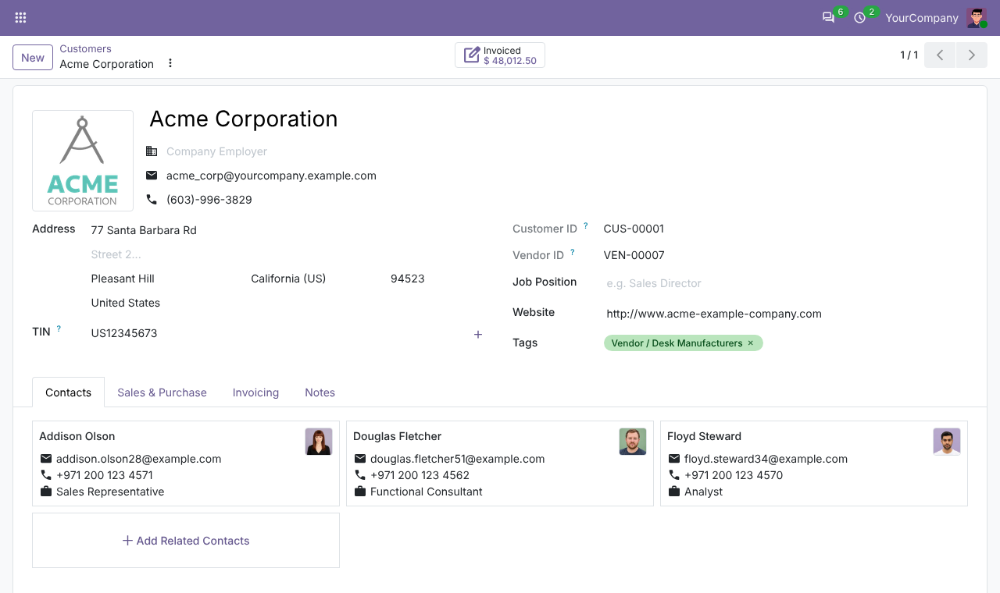
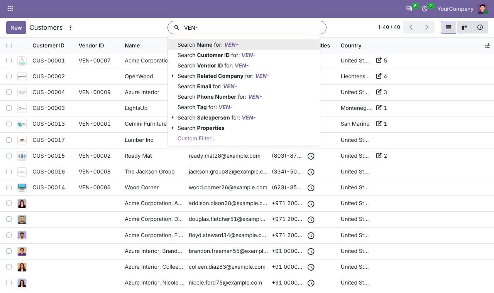
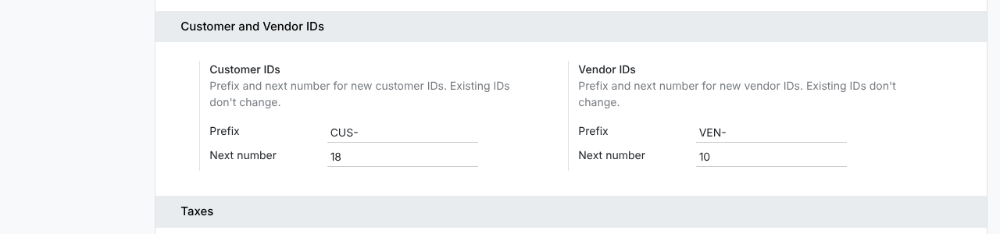

Give every customer and vendor a permanent ID, such as CUS-00001 or VEN-00001, with a prefix you choose.
A contact gets its Customer ID the first time it becomes a customer, and its Vendor ID the first time it becomes a vendor. A contact that is both gets both IDs.
IDs never change. They are unique, they are not copied when a contact is duplicated, and only the company gets one, not the people listed under it.
Change the prefix (for example VEN- to ACMEVEN-) and the next number in Settings. Existing IDs keep their old prefix.
The Customer ID and Vendor ID columns show in the contact list, and both IDs show on the contact form.


Type an ID in the contact search, or in the customer and vendor fields on quotations, orders, invoices and bills.

Go to Invoicing (or Accounting) > Configuration > Settings > Customer and Vendor IDs to set each prefix and the next number.
